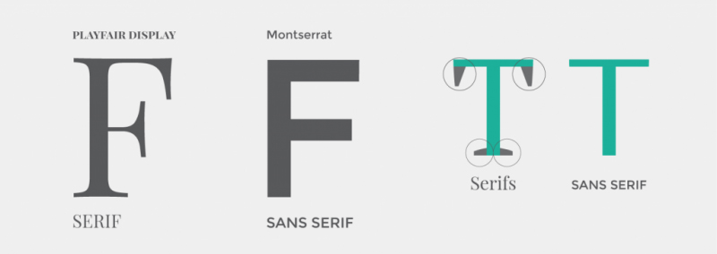

Text and Font Properties

I am serif.
I am sans.
Web safe fonts are fonts that are included with most operating systems, meaning that a designer can expect typography involving web safe fonts to appear exactly as intended to most users.
Some Common examples of web safe fonts are:
Web safe serif fonts:
Georgia
Times New Roman
Web safe sans-serif fonts:
Arial
Tahoma
Trebuchet MS
Verdana
Web safe monospaced fonts:
Courier New
It is worth noting that font stacks with fallback options including a generic font family should still be used even if your design uses only web safe fonts. For example:
element { font-family: Helvetica, Arial, Sans-Serif; }
element { font-family: "Times New Roman", Times, Serif; }
element { font-family: "Courier New", Monospace; }